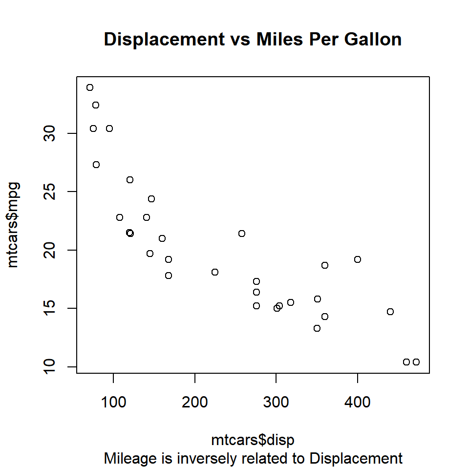

Introduction
This is the second post of the series Data Visualization With R. In the previous post, we explored the plot() function and observed the different types of plots it generated. In this post, we will learn how to add:
- Title
- Subtitle
- Axis Labels
to a plot and how to modify:
- Axis range
In the previous post, we created plots which did not have any title or labels. Such plots are of no use to any one as they do not indicate what the X and Y axis represent or the primary information being communicated by the plot. The title and labels play an important part in making the plot holistic. There are two ways to add them to a plot:
- use the relevant arguments within the
plot()function - use the
title()function
We will explore both the above methods one by one, and you can choose the method most convenient to you. Let us begin with the plot() function:
Syntax
| Feature | Argument | Value | Example |
|---|---|---|---|
| Title | main | string | “Scatter Plot” |
| Subtitle | sub | string | “Displacement vs Miles Per Gallon” |
| X Axis Label | xlab | string | “Displacement” |
| Y Axis Label | ylab | string | “Miles Per Gallon” |
Title
You can add a title to the plot using the main argument in the plot() function. Ensure that the title is enclosed in single/double quotes as it is a string. Let us create a scatter plot of disp and mpg from mtcars data set, and add a title to it.
plot(mtcars$disp, mtcars$mpg,
main = 'Displacement vs Miles Per Gallon')Subtitle
You can add a subtitle to the plot using the sub argument in the plot() function. The subtitle will appear below the X axis label. Ensure that the subtitle is enclosed in single/double quotes as it is a string. Let us add a subtitle to the plot we created in the previous example:
plot(mtcars$disp, mtcars$mpg,
main = 'Displacement vs Miles Per Gallon',
sub = 'Mileage is inversely related to Displacement')
Axis Labels
In the plots created in the previous examples, the axis labels appear as mtcars$mpg and mtcars$disp. It is not the best way to name the axis and it will make more sense to use names that describe the data. Let us modify the axis labels using the xlab and ylab arguments in the plot() function:
plot(mtcars$disp, mtcars$mpg,
main = 'Displacement vs Miles Per Gallon',
sub = 'Mileage is inversely related to Displacement',
xlab = 'Displacement', ylab = 'Miles Per Gallon')
title()
We can add title, subtitle and axis labels using the title() function as well. Let us recreate the plots from the previous examples but this time we will use the title() instead of the plot() function. We will continue to use the plot() function to create the plot.
# create scatter plot
plot(mtcars$disp, mtcars$mpg)
# add title, subtitle and axis labels
title(main = 'Displacement vs Miles Per Gallon',
sub = 'Mileage is inversely related to Displacement',
xlab = 'Displacement', ylab = 'Miles Per Gallon')Do you notice that the axis labels are overwritten? This happens because the plot() function adds the default labels and we add a new set of labels without modifying the existing ones. The solution is to instruct the plot() function not to add any labels to the X and Y axis. This can be achieved using the ann (annotate) argument in the plot() function and set it to FALSE. Let us try it:
# create scatter plot
plot(mtcars$disp, mtcars$mpg, ann = FALSE)
# add title, subtitle and axis labels
title(main = 'Displacement vs Miles Per Gallon',
sub = 'Mileage is inversely related to Displacement',
xlab = 'Displacement', ylab = 'Miles Per Gallon')The axis labels are legible and not overwritten. You can use either the plot() function or the title() function to add title, subtitle and axis labels but ensure that in case you use the title() function, set ann argument to FALSE in the plot() function.
Axis Range
In certain cases, you would want to modify the range of the axis of the plots. By default, the plot() function will take into account the min and max values of the variable(s) and set the range for the axis. We can modify the range by using the xlim and ylim arguments in the plot() function. Both the xlim and ylim arguments take 2 values as inputes. The first value is the minimum value for the axis and the second value is the maximum value for the axis. The plot() function will return an error if we do not specify two values for both xlim and ylim arguments. Let us recreate the plot from the previous examples but change the range of both the X and Y axis:
plot(mtcars$disp, mtcars$mpg,
xlim = c(0, 600), ylim = c(0, 50))Keep in mind that the axis ranges cannot be modified using the title() function.
Summary
In this post, we learned how to add title, subtitle and axis labels to a plot using the plot() and title() function. We also learned how to modify the range of the X and Y axis using the xlim and ylim arguments within the plot() function. In the next post, we will learn to create the scatter plot.